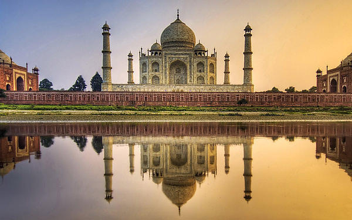
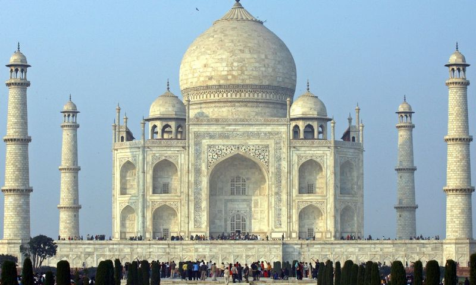

Kristaus Atpirkėjo statula
Tadžmahalas
Tadžmahalas (angl. Taj Mahal arba Tajmahal) – mauzoliejus Indijoje, Agros mieste. Jį 1631-1654 m. statė apie 20000 žmonių. Mogolų imperatorius Šahdžahanas jį pastatydino kaip mauzoliejų savo žmonos Arjumand Banu Begum, dar žinomos kaip Mumtaz Mahal, garbei.

Tadžmahalas laikomas įspūdingiausiu Mogolų imperijos statiniu, jame susipynę persų, indų, turkų bei islamo architektūros elementai. Žinomiausia Tadžmahalo vieta yra balto marmuro mauzoliejus, nors visą statinį sudaro ir daug kitų architektūros elementų. Visas kompleksas užima apie 17 ha plotą.
1983 m. Tadžmahalas įtrauktas į UNESCO Pasaulio paveldo sąrašą.
